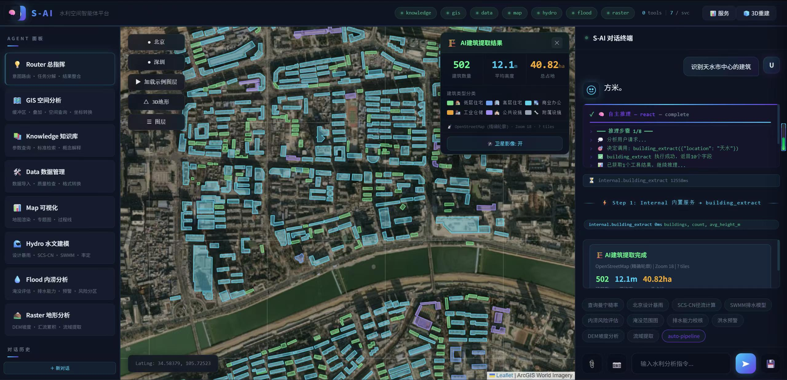
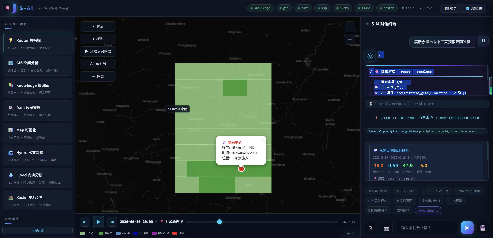
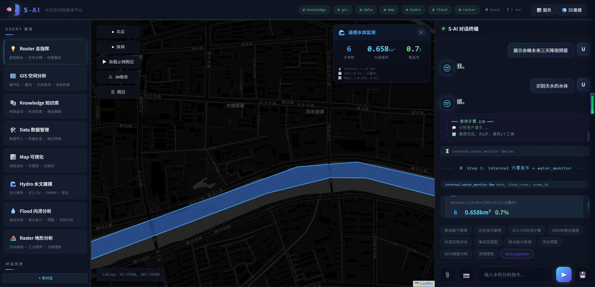

S-AI: Spatial Intelligence Platform
for Water Resources Engineering
From a single sentence to a full physics-based flood inundation assessment — distributed hydrology, 2D shallow water simulation, and per-building impact analysis — fully autonomous in 13 seconds, with zero API cost.
Overview
S-AI is a production-grade multi-agent spatial intelligence platform that federates 42+ specialized geospatial and hydrological tools across eight MCP microservices, enabling natural language intent parsing that autonomously decomposes user queries into executable hydrodynamic workflows. The platform pioneers a distributed hydrological modeling chain that automates the complete pipeline from rainfall to building-level inundation assessment in under 15 seconds: SRTM 90m global DEM acquisition → D8 watershed delineation → OSM land use-driven SCS-CN curve number assignment (CN 55–98) → time-area flow routing → Manning 2D shallow water inundation → per-building impact assessment.
Empirical evaluation demonstrates that a single query — “Will Tianshui flood with 150mm/24h?” — triggers autonomous orchestration of 428 OSM land use polygons, 1,174 building assessments, distributed SCS-CN runoff generation (71.7mm from 150mm rainfall), peak discharge of 59.5 m³/s, and 2D inundation reaching 3.12m depth over 56.9% of the analysis area — all on a single consumer GPU with zero API cost beyond LLM inference.
Each module starts from natural language, with AI autonomously orchestrating the full computational chain using free, globally available data sources.
Distributed Hydrology × 2D Hydrodynamics
SRTM DEM → D8 watershed → OSM land use SCS-CN → time-area routing → Manning 2D shallow water → per-building impact
Autonomous Drone Mission Planning
Flood hotspots → TSP nearest-neighbor + 2-opt → waypoint optimization → KML export for DJI deployment
Multi-Temporal Water Body Change Detection
Dual-period Sentinel-2 → MNDWI + Otsu auto-threshold → pixel-level diff → expansion/shrinkage GeoJSON
Intelligent Building Extraction
OSM precise footprints + SAM fallback → 6-class taxonomy → satellite imagery overlay → SCS-CN land use fusion
ERA5-Land Precipitation Grid Animation
9km hourly precipitation → animated heatmap → storm center tracking → reverse geocoded place names
Map Draw → Instant Spatial Analysis
Draw rectangle on map → auto bbox extraction → one-click flood / building / water / drone analysis trigger
User asks “Will Tianshui flood with 150mm/24h?” — AI orchestrates the full physics-based pipeline in 13 seconds
City Geocoding46 cities + Nominatim
Natural language → coordinates → analysis bbox (~3km²)
SRTM Global DEMTerrarium 90m · AWS CloudFront
rasterio COG windowed read → 106×66 elevation grid (51m/px) · 3-tier fallback
Watershed DelineationD8 + Topological Sort
8-neighbor steepest descent → BFS accumulation → stream network (367 cells, 15 nodes)
Distributed SCS-CNOSM Land Use · CN 55-98
residential→85, commercial→92, forest→55 → Path rasterization → per-grid excess rainfall
Time-Area RoutingManning velocity · Travel time
T = Σ(d/v) → 30-bin histogram → rainfall × histogram → outlet discharge Q(t) = 59.5 m³/s
2D Shallow WaterManning 8-neighbor diffusion
v=(1/n)h^(2/3)S^(1/2) → 8-neighbor flux → mass conservation → 13 depth frames (peak 3.12m)
Building ImpactOSM × DEM × Peak Depth
1,174 footprints → safe/partial/submerged → flooded floor estimation
VisualizationHeatmap + Hydrograph + Timeline
Animated depth grid + satellite overlay + stats panel + KML export
All visualizations based on real satellite data (SRTM + OSM + Sentinel-2 + ERA5-Land) — click any image to enlarge






| Dimension | Traditional (HEC-HMS + HEC-RAS + ArcGIS) | S-AI |
|---|---|---|
| Setup time | 9+ hours expert work | 13–18 seconds |
| Software stack | 3–5 separate applications | Single integrated platform |
| CN assignment | Manual land use mapping | OSM auto-rasterization |
| Building impact | Manual GIS overlay | Per-building auto-sampling |
| Drone planning | Separate mission planner | AI TSP + KML export |
| DEM data | Manual download + preprocessing | SRTM auto-fetch (free) |
| Cost | Licenses + HPC + expert time | Free data + consumer GPU |